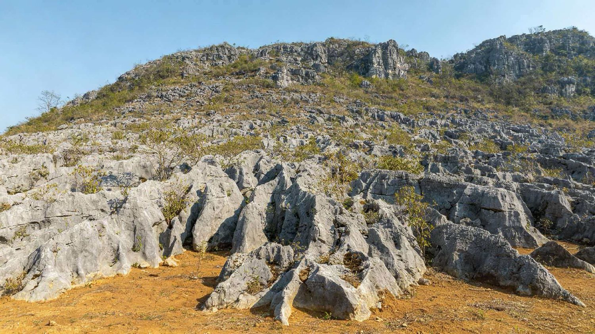
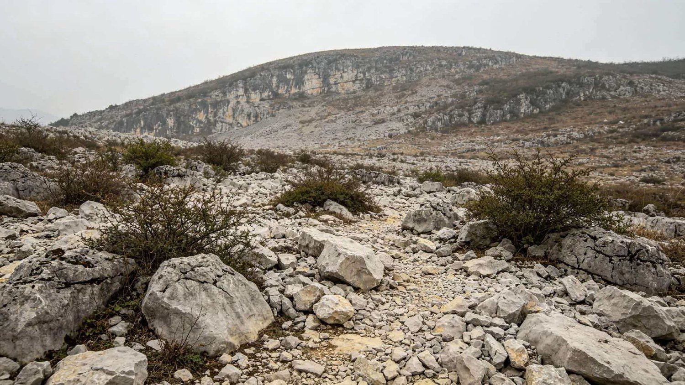
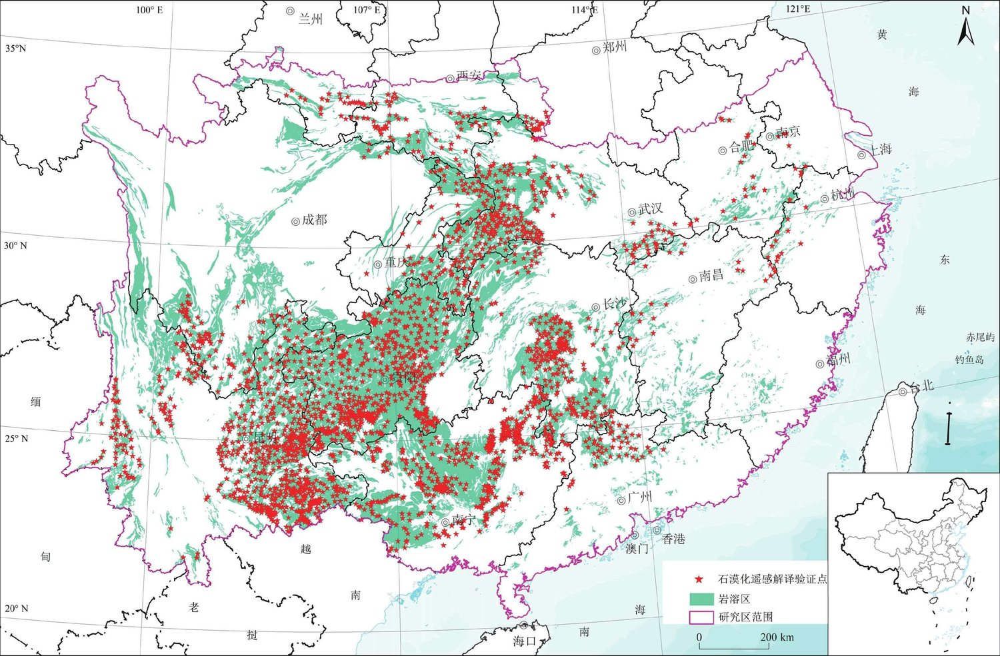
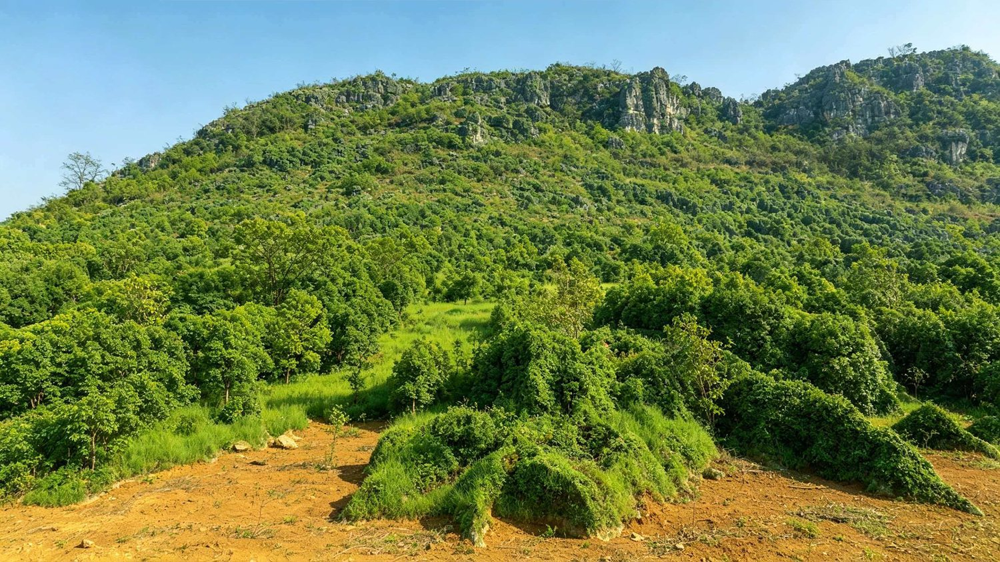

从植被破坏到地表退化
岩溶地区土层通常较薄，地表一旦失去植被保护，降雨冲刷更容易带走土壤，裸岩面积随之扩大。
植被受损土壤流失基岩裸露生产力下降

石漠化并不只是“山上石头变多了”。在岩溶地区，植被受损、土壤流失、基岩裸露和土地生产力下降往往同时发生。认识这些变化，也能更直观地理解为什么不同地区需要采取不同的保护与修复方式。
石漠化是岩溶地区土地退化的一种典型形式。地表植被遭到破坏后，土壤侵蚀加剧，基岩逐渐大面积裸露，严重时会导致土地生产功能明显下降。

岩溶地区土层通常较薄，地表一旦失去植被保护，降雨冲刷更容易带走土壤，裸岩面积随之扩大。
基岩裸露达到一定程度，但植被和土壤条件仍较好；若受到持续扰动，可能进一步退化。
岩溶地表出现明显裸岩、土壤侵蚀和植被退化，需要结合实际状况开展分类治理。
西南岩溶分布广，山地坡陡、地表破碎，部分地区降雨集中；自然脆弱性与长期人类活动叠加，使石漠化问题更突出。
石漠化程度并不是只看“石头有多少”。实际监测会综合基岩裸露度、植被类型、植被综合盖度和土层厚度等因素。下面用裸岩比例和植被变化做直观示意。
土被仍有一定连续性，植被恢复条件相对较好。
岩石裸露扩大，植被和土壤保持能力进一步下降。
地表破碎明显，土壤侵蚀较强，生态恢复难度增大。
基岩大面积裸露，植被稀少，地表生态功能严重退化。
石漠化主要与岩溶地貌相伴出现。我国西南岩溶地区是典型集中分布区，第四次石漠化调查范围覆盖江西、河南、湖北、湖南、广东、广西、重庆、四川、贵州和云南等 10 个省（区、市）。

土层变薄、植被减少和裸岩增加会改变地表水土条件，也会影响农业生产、生物栖息环境和区域生态安全。这些影响往往同时发生。
水土流失会削弱土壤保持和水源涵养能力；植被结构简化会影响生物栖息地；农业生产条件下降后，也可能进一步影响山区群众的生产生活。
土层更容易被冲刷，地表保水和涵养水源的能力下降。
有效土层减少，耕作条件受限，土地生产力可能持续下降。
植被减少和地表破碎会压缩生物生存空间，生态系统稳定性降低。
在强降雨等条件下，水土流失、滑坡等风险可能进一步增加。
石漠化治理强调因地制宜和综合施策。不同坡度、土层、植被和土地利用方式对应的治理方式并不相同，常见措施可概括为林草、农业技术和工程三类。

植被恢复后的山地生态景观封山育林育草、退化林修复、水土保持、坡耕地整治和适宜的生态产业，都可以成为综合治理的一部分。
封山管护、封山育林、人工造林、退化林修复、人工种草、草地改良等。
保护性耕作、间作、轮作等，减少耕作活动对脆弱地表的持续扰动。
坡改梯、客土改良、小型水利水保工程等，改善水土保持和生产条件。
减少人为干扰，让原生植被逐步恢复。
针对不适宜继续耕作的坡地恢复林草植被。
通过坡改梯、蓄水和拦沙等措施减少土壤流失。
选择适生经济林、林下经济等方式兼顾生态恢复与生产需要。